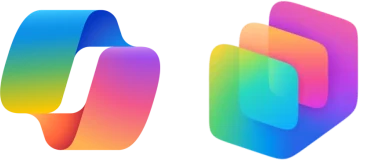
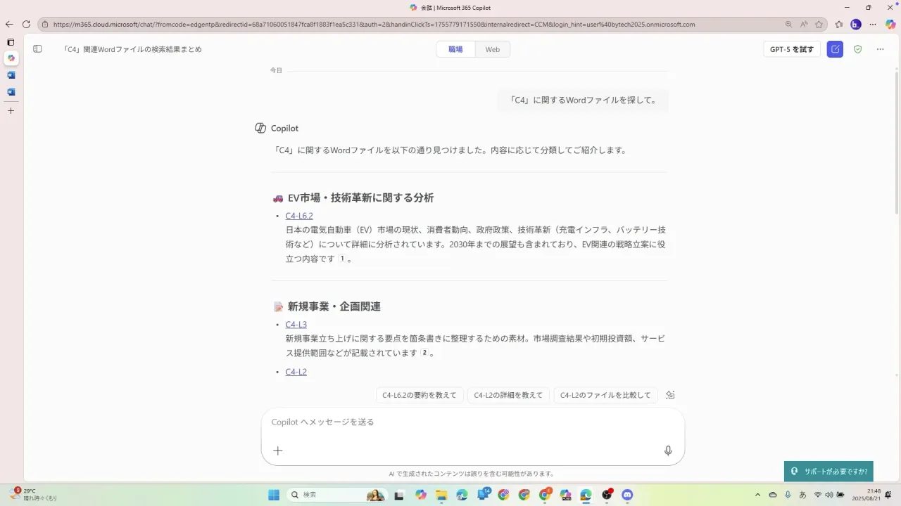
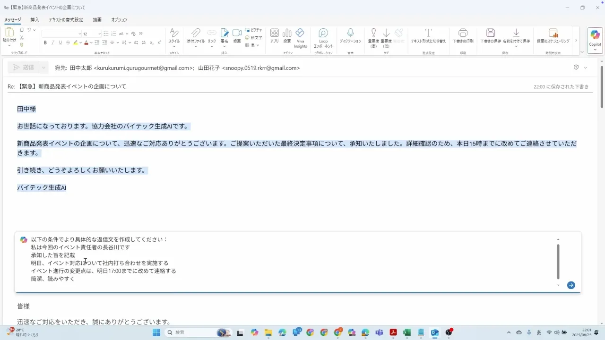
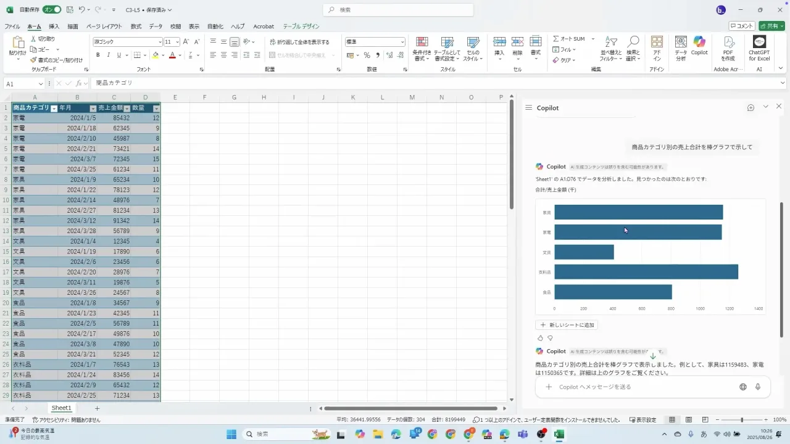
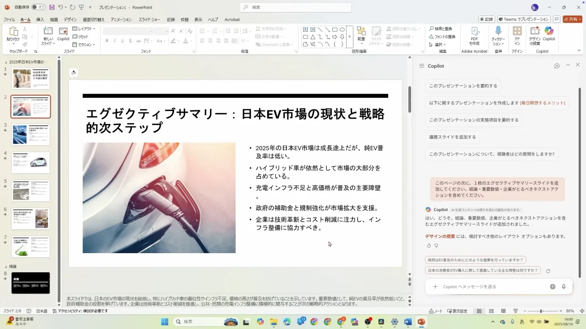
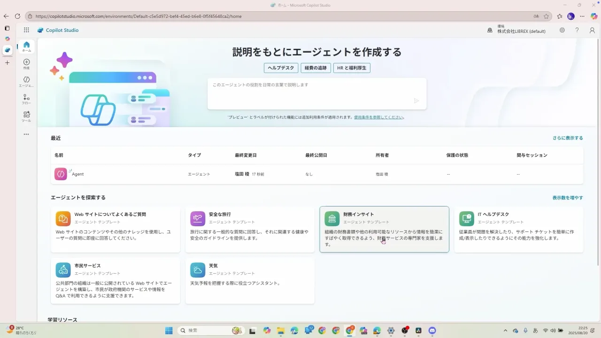
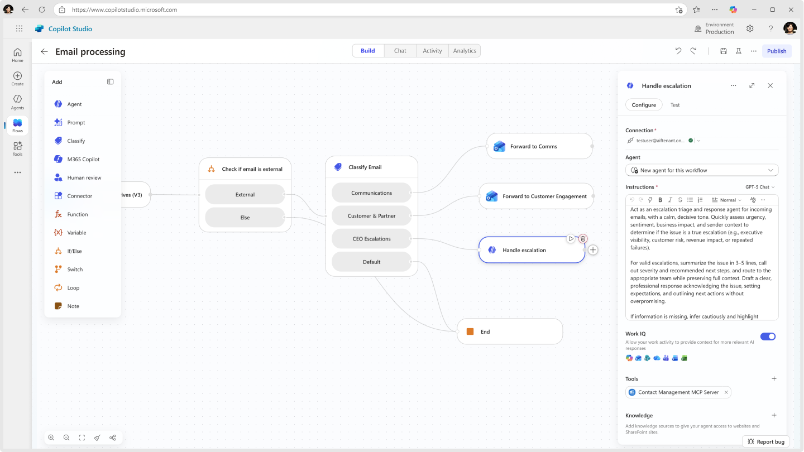
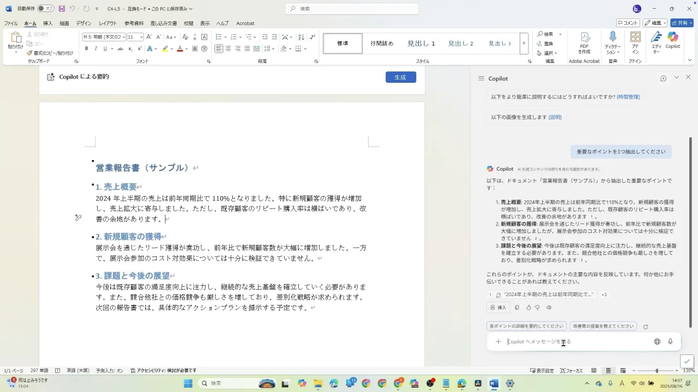

Copilot活用からAIエージェント内製まで進めたい組織・チームにおすすめ。
オンライン ｜ 助成金対応
Copilot Studio研修コース紹介資料

UPDATE 2026.9
Contents
目次
01Copilot Studio研修とは
02こんな組織におすすめ
03研修の概要と3つのステップ
04カリキュラム（STEP01〜03）
05レッスン一覧（全11ユニット・70レッスン）
06料金プランと助成金活用・サポート体制
07研修開始までの流れ・よくあるご質問
© 株式会社AI棒
01 Copilot Studio研修とは
Microsoft 365での業務活用から、
AIエージェントの構築・運用まで身につける
Microsoft 365 Copilotを使った会議・メール・文書・データ業務の効率化から、Copilot Studioによる社内向けAIエージェントの構築までを一貫して習得。日々の活用と業務自動化を分断せず、現場が自走して改善できる状態を目指す法人向け研修です。
01
Microsoft 365の日常業務を まとめて効率化
Teams、Outlook、Word、Excel、PowerPointでCopilotを活用。会議、メール、資料作成、データ分析など、毎日の業務を実際の操作に沿って効率化します。
02
Copilot Studioで AIエージェントを内製
画面上で会話や処理を組み立て、社内問い合わせやFAQに対応するエージェントを作成。開発経験がなくても、業務課題を動く仕組みへ落とし込めます。
03
社内データ・業務フローと 安全につなげて運用
SharePointやTeams、Power Automateと連携し、社内情報を根拠に回答・実行する仕組みを構築。権限、公開、精度確認、改善まで含めて運用力を養います。
© 株式会社AI棒
02 こんな組織におすすめ
日常業務のAI活用から、社内エージェントの構築・運用まで一気通貫で実現
社内問い合わせを自動化したい管理部門
規程、手続き、ITサポートなどの質問へ、社内情報を根拠に回答するエージェントを構築。総務・人事・情報システムの対応負荷を減らします。
Microsoft環境で業務自動化を進めたい組織
TeamsやPower PlatformとつながるAIエージェントをつくりたい組織に。既存のMicrosoft環境を活かし、業務の受付から処理までをつなげます。
エージェント開発を現場で内製したいDXチーム
要件のたびに開発部門へ依頼せず、ノーコードで試作・改善できる体制をつくりたいチームに。公開と運用まで一連で学べます。
AIエージェントの精度と統制に課題がある組織
回答のばらつき、権限、公開範囲、保守方法に不安がある組織に。ナレッジ設計と制御を学び、安心して使い続けられる状態を整えます。
© 株式会社AI棒
03 研修の概要
実務で成果につなげるための3つのステップで構成
試聴時間
約9時間
レッスン数
全70レッスン
受講形式
オンライン
使用ツール
Copilot / CopilotStudio
STEP 01Copilot活用
Copilotの全体像と社内情報の活用
Outlook・Teams・Wordでの業務効率化
STEP 02資料・データ活用
Excelでの集計・分析・可視化
PowerPoint・Wordで伝わる資料を作成
STEP 03構築・連携・運用
最初のAIエージェントを構築
SharePoint・Power Automateとの連携
安全な公開と継続運用
© 株式会社AI棒
04 カリキュラム

Copilotの全体像と社内情報の活用
Copilotの種類と特徴、安全な使い分けを理解します。メール・ファイル・チャットを横断して必要な情報を探し、Microsoft 365上の社内情報を日々の判断へ活かす基本を身につけます。

Outlook・Teams・Wordでの業務効率化
メールの要約と返信、会議内容の整理、文書の下書き・推敲までを実際の操作画面で学習。毎日繰り返すコミュニケーション業務を、Copilotと進める型へ変えていきます。
© 株式会社AI棒
04 カリキュラム

Excelでの集計・分析・可視化
表の読み取り、数式提案、傾向分析、グラフ作成をCopilotと実行。データを渡して終わらせず、確認と修正を重ねながら、判断に使える形へ仕上げる手順を習得します。

PowerPoint・Wordで伝わる資料を作成
企画の骨子づくりから、Wordでのレポート整理、PowerPointでのスライド作成までを一連で実践。情報を集めるだけで終わらず、伝わる成果物へ仕上げる力を身につけます。
© 株式会社AI棒
04 カリキュラム

最初のAIエージェントを構築
Copilot Studioの画面構成を理解し、目的と役割を設定して最初のエージェントを作成。チャット型とワークフロー型を使い分け、業務課題を動く仕組みへ落とし込みます。

SharePoint・Power Automateとの連携
社内資料を回答の根拠として登録し、Power AutomateやSharePointの処理と接続。問い合わせへの回答から受付・確認・実行まで、業務がつながるエージェントを構築します。

安全な公開と継続運用
Teamsへの公開、利用者と権限の設定、回答精度の確認、テストと改善を実践。試作で終わらせず、社内で安全に使い続けられる運用体制まで整えます。
© 株式会社AI棒
05 レッスン一覧
全11ユニット・70レッスン／視聴時間 約9時間（1/2）
| No. | ユニット | チャプター | 時間 | 主な内容 |
|---|---|---|---|---|
| 01 | Copilotの基礎と社内情報の活用 | 7 | 約32分 | Copilotとは？生成AIとしての基礎知識／ブラウザ版・デスクトップ版、個人向け・法人向けの違い／CopilotとCopilot Studioの役割と使い分け／職場モードでメール・ファイル・チャットを横断検索 |
| 02 | Microsoft 365アプリでの実務活用 | 12 | 約1.4時間 | Teamsでの会議要約とアクション抽出／Outlookでのメール要約・返信文作成／Wordでの文章作成・推敲・要約／Excelでの集計・分析・可視化 |
| 03 | Copilotを活用した資料作成 | 9 | 約1.3時間 | 企画書のアイデア整理と骨子作成／PowerPointスライドの作成と改善／長文報告書から役員向けサマリーを作成／リサーチ結果を伝わるレポートへまとめる |
| 04 | セキュリティとデータ保護 | 3 | 約15分 | 法人利用におけるセキュリティ基盤／データアクセスと保存場所の仕組み／社内ルールと安全な利用方法 |
| 05 | 部門別活用と業務への定着 | 17 | 約3時間 | 人事・営業・マーケティング・法務での活用／プロンプト管理とチーム共有／業務棚卸しから活用テーマを選定／Copilot活用からエージェント構築へつなげる |
| 06 | イントロダクションと基本概念 | 4 | 16分 | ユニット概要／Copilot Studioの2種類（Lite版とFull版）／受動的チャットから能動的エージェントへ／一問一答（チャット）と一連の動作（ワークフロー） |
| 07 | エージェント構築の第一歩 | 3 | 14分 | 基本的な画面構成とナビゲーション／エージェント作成入門：最初のボットを立ち上げる／Copilot Studio Fullの鍵：ツールとフローの基礎 |
| 08 | ナレッジ活用とセキュアな公開 | 4 | 18分 | 社内データ特化型：SharePoint情報を活用したエージェント／ナレッジ構築：ソース登録と優先順位管理／システムプロンプトの基礎：AIに人格と制約を与える／Microsoft Teamsへのデプロイ手順 |
© 株式会社AI棒 ※カリキュラムは最新のアップデートに合わせて随時更新しています。
05 レッスン一覧
全11ユニット・70レッスン／視聴時間 約9時間（2/2）
| No. | ユニット | チャプター | 時間 | 主な内容 |
|---|---|---|---|---|
| 09 | 信頼性と制御の高度化 | 4 | 18分 | ハルシネーション対策：ファクトチェック機構／チャット型からワークフロー型への設計転換／高度なシステムプロンプト設計：複雑な業務条件／トピック設計で挙動をコントロール |
| 10 | 外部連携とUXの極意 | 4 | 22分 | アダプティブカードによる視覚的UX／SharePointリストの作成とデータ構造／Power Automateを用いたフロー構築／エンドツーエンドテスト・デバッグ |
| 11 | 実践Tipsと総括 | 3 | 10分 | プロンプト内にトピックを埋め込む技法／思考不要フローはPower Automateへ／まとめ：自律型エージェントが変える働き方 |
© 株式会社AI棒 ※カリキュラムは最新のアップデートに合わせて随時更新しています。
06 料金プラン
Copilot Studio研修は3つの研修プランで受講できます
eラーニング
100,000円〜／名
税抜・受講者1名ごと
動画教材で、時間や場所を選ばず自分のペースで学習。全社員へ均一な基礎を低コストで浸透させたい場合に。
AI効率化研修
200,000円〜／名
税抜・サポート期間2ヶ月
eラーニングに1on1のハンズオンを組み合わせ、日々の定型業務を効率化。現場で使えるレベルまで伴走します。
助成金の対象プランAI自動化研修
300,000円〜／名
税抜・サポート期間4ヶ月
業務プロセスそのものの自動化まで踏み込み、社内で推進できる人材を育成。内製化の起点をつくります。
助成金の対象プラン© 株式会社AI棒
06 助成金活用
助成金活用で、実質負担は最大75%OFFまで下がります
AI効率化研修
受講料金（税抜）
¥200,000／名
実質負担（税抜）
¥50,000／名
AI自動化研修
受講料金（税抜）
¥300,000／名
実質負担（税抜）
¥150,000／名
人材開発支援助成金「事業展開等リスキリング支援コース」に対応しています。提携パートナー社労士をご紹介し、助成金活用チェックシートのご記入後、要件を満たす企業様へ申請サポートをご案内します。
無制限チャットサポート
オンライン個別面談
＆証明書発行
オンラインセミナー
検証サポート
© 株式会社AI棒 ※助成金の適用可否・助成額は貴社の状況および申請時点の制度要件により異なります。記載は試算例です。
07 研修開始までの流れ
無料個別相談から、最短7日で研修開始まで
無料個別相談
現状の課題・目的・受講人数をヒアリングし、最適なプランをその場でご提案します。（60分・Zoom）
ご提案・お見積り
カリキュラム・スケジュール・料金をご提示。導入を希望される方は申込フォームへご入力ください。
助成金申請
（計画届の提出）
研修内容・スケジュール・受講人数をもとに計画届を提出。提携社労士のご紹介も可能です。
お支払い・初回面談
お支払い後、学習の進め方〜サポートの受け方をご案内する初回面談を実施します。
研修開始
学習システムのID/Passを発行し、研修スタート。チャット・面談・セミナーで研修期間中を伴走します。
まずは無料個別相談で、貴社に合う受講プランをご提案します
課題・人数・予算をもとに、研修プランの組み合わせと助成金活用までその場でご案内します。
© 株式会社AI棒
07 よくあるご質問
Copilot Studio研修のよくあるご質問
プログラミング未経験の社員でも受講できますか？
はい、受講いただけます。Copilot Studioはノーコードで社内AIエージェントを構築できるツールのため、コード記述は不要です。画面操作を中心に手を動かしながら学ぶ構成で、情報システムや総務など非エンジニアのご担当者様でも実務レベルの構築スキルを習得できます。
研修期間や回数はどのくらいですか？
本研修は全6レッスン・視聴時間は合計約2時間の構成です。基礎理解から構築・ナレッジ活用、外部連携・運用までを段階的に学びます。ご受講プランに応じて、実務課題に沿った演習やサポートを組み合わせた期間設計にも対応いたします。
受講形式は対面とオンラインのどちらですか？
本研修はオンラインのみでのご提供です。動画教材と演習を組み合わせた形式で、拠点や勤務地を問わず全国どこからでも受講いただけます。複数拠点に社員が分散している企業様でも、統一した内容で研修を展開できます。
受講にはどのような環境やライセンスが必要ですか？
Copilot Studioの利用環境に加え、Microsoft 365およびPower Platformの環境が必要です。SharePoint連携やPower Automate連携を扱うため、対象ライセンスの準備を推奨します。導入状況に不安がある場合は、事前に必要環境をご案内いたします。
© 株式会社AI棒
07 よくあるご質問
導入・費用・研修後のサポートについて
この研修で具体的に何が作れるようになりますか？
社内FAQボットや問い合わせ対応の自動化エージェントを構築できるようになります。SharePointのナレッジ連携やシステムプロンプト設計、Microsoft Teamsへの公開、Power Automateを用いた業務フロー連携まで習得し、現場が自走して内製化を進められる状態を目指します。
助成金は活用できますか？
はい、助成金の活用に対応しています。提携する社会保険労務士のご紹介に加え、申請要件を確認いただけるチェックシートをご提供します。貴社の状況に合わせて活用可能な制度をご案内し、申請手続きの負担を抑えながら導入いただけます。
受講後のサポートはありますか？
受講後も構築や運用に関するご相談に対応いたします。実務でのエージェント構築や社内展開でつまずいた際のフォロー、定着に向けた支援を通じて、研修内容を現場の業務改善へ着実に落とし込めるようサポートします。
© 株式会社AI棒
ご留意事項
ご利用にあたって
本資料に記載の料金はいずれも税抜の目安であり、受講人数・実施内容により変動します。正式な料金はお見積りにてご提示します。
助成金（人材開発支援助成金）の適用可否・助成額は、貴社の状況および申請時点の制度要件により異なります。記載の実質負担額は試算例です。
カリキュラムの内容・レッスン数・視聴時間は2026年9月時点のものです。ツールのアップデートに合わせて随時更新しています。
掲載しているツール名・サービス名は各社の商標または登録商標です。
社内でのコピー・配布はご自由にどうぞ。社外への転載・再配布はご遠慮ください。
研修内容・助成金活用のご相談は、無料個別相談（biz.bytech.jp/counseling）で承ります。
発行：バイテック法人AI研修（株式会社AI棒） 2026年9月版
© 株式会社AI棒